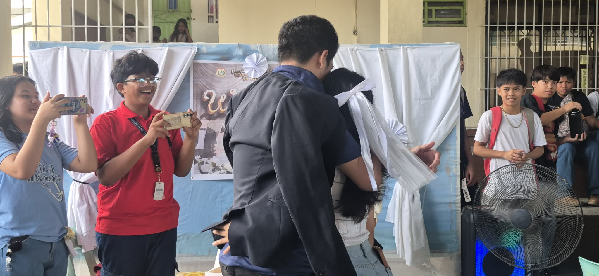
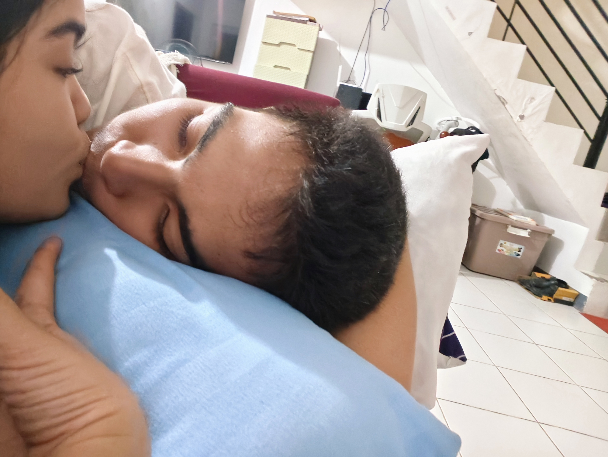
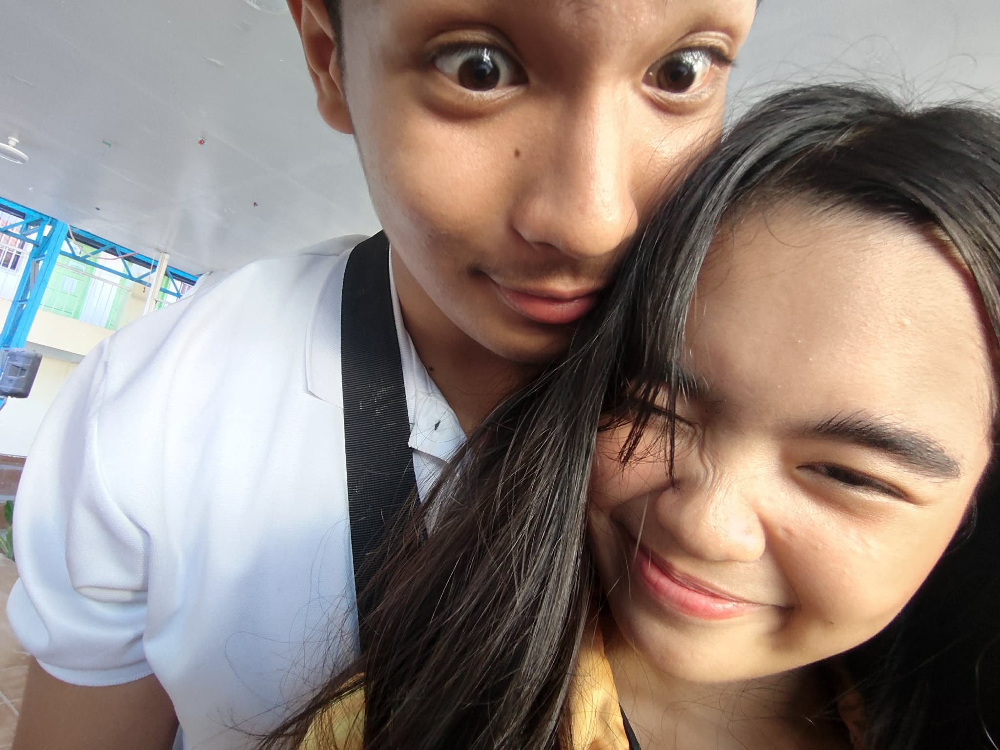
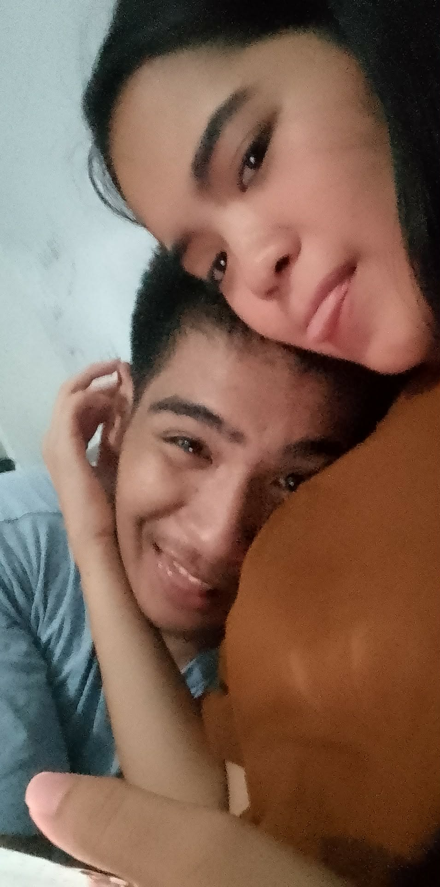
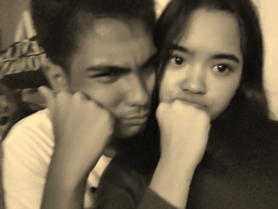
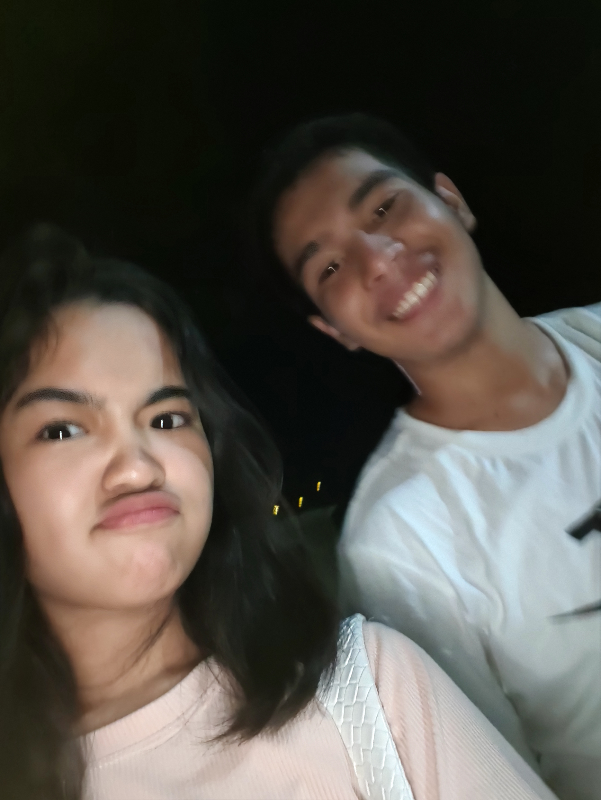
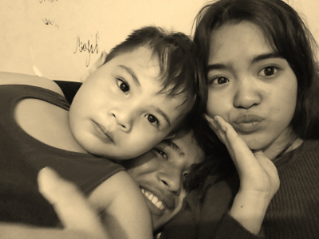

Gusto ko lang talaga maglaro ng Roblox nung araw na 'yon, kaya nagyaya ako. Then, sinali ka ni Micaella, and that was basically the start of everything. At first, wala naman talaga akong ibang iniisip kundi maglaro lang and have someone to play with. Nung nalaman ko na nagcocodm ka rin pala, niyaya po agad kita kasi wala talaga akong makalaro noon. Well, meron naman… pero ayaw ko lang talaga silang kalaro HWSHAHAAHAHAHAHAHAHA. So ayun, pinag-download kita ng game and naghintay mee hanggang sa matapos ka. Habang naghihintay syempre flex muna ko sa mga ginagawa ko sa laro para isipin mo na magaling talaga ko nonnn HWEHEHEHEHEHHE. Then after that naglaro na po tayo and araw-araw na po tayong naguusap YAYYYYYYYYY
02
Our first memories
First Memories
Pinakafirst siguro po nating memory is yung naglaro po tayo codm tapos 2am na ng gabi naglalaro parin tayooo WOOHOOOO tas nagscreenshot ka po nun and nagmyday dun sa instagram pero dinelete lang po ulit sayanggg and then after non nagpalit ako ng ign na ElaiHatesPPL TAS NAGPALIT KA DIN OMGG ng DaenHatesPPL WOOHOOO TALAGAAAA MATCHY MATCHYYY USSSS
03
The moments that made me smile
Smiling Moments
The moment that made me smile is when you confessed to me indirectly using IG reels liyk yung hulaan mo crush ko, clue: kapangalan mo pa nga e WHAHSAHHAHAHAHAHAHA LIYKK WHATTT dun ko po talaga narealize lalo na gusto mo rin po pala ko liyk OMGGGG SAME I LIKE YOU SO MUCHHH BABYYYYY kaya simula that day I started giving signs na rin po na may gusto me sayo hanggang sa sumabay kana po talaga sa trip ko HEHEHEHEHEHEHEHE gusto pala natin isa't isa NYAHAHAHAHAHHAHHAHA
04
The times we got through together
Overcoming Together
Not trying to go back to the past po or bring up old issues again, pero I really want to include this because it's one of the things we got through together. Yung about kay Gio, I'm genuinely so happy na nalagpasan at nasolusyonan po natin siya. Hindi man naging madali para sa ating dalawa, and kahit may mga sakit at bigat pa rin na naiwan from what happened, I'm glad na hindi po natin hinayaang tuluyang masira tayo dahil doon. I know na may mga bagay na hindi naman basta-basta nakakalimutan agad. May mga moments na kapag naaalala natin, masakit pa rin, and that's okay. Hindi naman natin kailangan pilitin ang sarili natin na kalimutan lahat agad. What matters to me is that we're slowly learning how to heal from it together. One day at a time, habang mas naiintindihan natin ang isa't isa and habang natututo tayo from what happened. I'm also really happy because despite everything, nandito pa rin tayo. We chose to talk, understand each other, fix what needed to be fixed, and continue trying. I know na hindi po naging perfect yung journey natin, we made mistakes, we got hurt, we had misunderstandings, but we also learned from them and became better para po sa relationship naten.
05
Where we are now
Present Day
Yes, we have our own flaws, our own mistakes, and marami pa po tayong things na kailangan ayusin sa sarili natin. Hindi naman po tayo perfect, and I know we never will be. Pero for me, hindi naman po kailangan maging perfect natin para maging okay tayo. What matters to me is that kahit may mga flaws and mistakes tayo, nandito pa rin po tayo, still choosing each other and still trying to make things work. We promised to stay. We promised to understand each other, kahit minsan mahirap intindihin yung isa't isa. And we promised na ipaglaban po natin yung isa't isa, kahit may mga times na hindi madali and kahit may mga bagay na kailangan nating pagdaanan. Alam ko naman po na hindi mawawala agad yung misunderstandings, arguments, and problems natin. May mga times pa rin po na magkakamali tayo or masasaktan natin yung isa't isa. Pero I don't want those things to be the reason para sumuko tayo. Gusto ko po, kapag may problema, pag-usapan natin, ayusin natin, and matuto tayo from it together.
our little scrapbook
Memories I want to keep forever
YOUR PHOTO
my favorite memory ♡
YOUR PHOTO
you make everything better
YOUR PHOTO
one of my favorite days
YOUR PHOTO
us ♡
a bouquet for you
Hi, I made this bouquet for you! ♡
A little garden of memories, picked just for you.
Dear love,
If I could, I'd give you these flowers in person.
But for now, here's a little bouquet made just for you. ♡
Love, always ♡
Tip: swap any flower src with your photo, e.g. photos/us.jpg
from my heart
A little letter for you...
Dear love,
HELLOOOOOOO BABYYYYYY, THIS IS MY GIFT FOR YOUUUU KAYA I HOPE YOU LIKED IT POOOO WOOHOOO😸I know na we had alot of arguments this year but I'm writing this letter for you to understand what I really feel and reassure you about everything babyyy ^^ I also saw your reposts, notes, likes and what you sent me rin, kaya I'm here to make you feel na mahal na mahal po kita kaya I'm not gonna ignore the signs that you're giving me or kung ano po talaga nararamdaman mo bebeee. Your feelings does matter bii, and I won't let you feel na iniinvalidate po kita :(( kaya I'm sorry babyyy kung may times na parang naiinvalidate ko po yung nararamdaman. Maybe I'm also not thinking straight everytime na we're having arguments because I'm letting feelings burst out ng hindi ko po nacocontrol kasi I'm sorry about this po haaa, naiipon ko po talaga lahat bago sabihin kasi I always thought sa una na owkii naman yun tas maliit na bagay lang e kaso po nauulit or may mga bagay na nagreremind saken about po dun sa nararamdaman ko na yun so bumabalik lang po sakin kaya naiipon po hehehehe my mistake babyyy, I'm sorry po talaga about that. Kaya I'm here po para po mapagaan po yung nararamdaman mo babyyy :)) First of all, yes I did change, I also noticed the changes na nangyayari sakin about my typings, how I'm acting right now compared before and how I treat you din po. And no baby, I didn't lose my feelings for you, hindi po nabawasan pagmamahal ko sayo, and hindi po ko napapalayo sayo. Siguro right now mas nangingibabaw lang po talaga yung takot ko na mawala ka kasi masakit po talaga yung mga nangyari e pero unti unti ko pong inaalis yung takot na yon, not in a way na mawawala na po yung takot ko na mawala ka, but in a way na kahit may fear pa rin po ako, hindi na siya magiging dahilan para magkaroon tayo ng arguments or para masaktan kita kasi I know na secured na po ako at siguro po me na hindi na po mangyayari yun hehehehe. Kaya baby please help me recover po, let's recover from all of this together. I don't want to lose you po talaga, I already planned our future and I want to marry you po kasi mahal na mahal ko po ikaw :)). Second babyyy, I don't know what to say po pero I think a good man would be scared na saktan ka and ayaw na mawala ka at the same time. Kasi mahirap po talagang mag-ayos ng misunderstanding kasi you know na bablock po yung utak naten and sometimes hindi po natin alam yung magandang sasabihin or hindi na po natin naiisip. Pero at the end of the day I'd rather to fix the misunderstanding with the right words and with the right tone. Third babyyy, about sa family repost po, I would still fight for us. You never put me in that position, and I don't want you to ever feel like you have to walk away just because my family might not understand us. Yes, sila po yung nagpalaki sakin, nagalaga sakin, and nagpapaaral sakin, and I'm grateful for everything they do for me. Pero at the same time, I also want to be able to make my own choices and choose the people I genuinely want in my life. I don't want to promise you na magiging against ako sa family ko just for you, because I don't think talaga na that's what love should be about. What I can promise to you po is that I won't easily give up on us just because things get difficult. I'll do my best to make them understand, and I'll stand up for what I believe is right for me and for us :> You're not a maybe to me babyy, owkiii?? I genuinely see you in my future, and I want to keep building that future with you :)). And also for the repost about me being nice towards another girl, all I can think of is Maraya. Sorry babyyy if I gave you the wrong vibes kasi naeexcite lang ako sakanilang dalawa. I understand naman po why it might have made you uncomfortable. I'll be more mindful of my boundaries na po and how my actions can look from your perspective kasi I don't want po talaga na may pagseselosan ka or iniisip mo po na may kalaban ka pong iba kaya I'm willing talagang lumayo sa mga sasabihin mo po saken bebiii :> Grade 7 palang po shiniship ko na sila ni Mark kasi nung nagtransfer me ng school grade 3 palang alam ko na pong crush na crush ni Maraya si Mark kaya po tinutulungan ko talagaaa, pero if you want to po bebiii, I'll ignore her nalang and kung gusto mo pong iblock then I'll do it po without any hesitations :)) So baby, if you're asking me if I still love you, if I still want you, or if I'm slowly drifting away from you, then my answer po is no. I'm still here po. I'm still choosing you. I still want parin yung mga plano ko in the future is mangyari po kasama ka :)) I want more datesss, mga calls po natin na kahit walang rason tumatawag parin (naeenjoy ko po talaga lahat ng calls naten SOFERRRR), mga late night talks po naten na mayayari rin po agaf kasi matutulog na po tayong dalawa, AND MARAMI PA PONG MANGYAYARI SATENNN ^^ I don't need us to be perfect bii, gusto ko lang po maging better and mag grow po tayong dalawa together <3 I love you so so much babyyy <33 I LOVEE YOUUUU MORE THAN ANYTHINGG MWAH MWAH MWAH MWAH MWAHPPPPSSSS!!!<33333
Love, always ♡
tiny reasons
Reasons I love you
favorite memories
Little moments, big feelings

Got Married
Ala na kasal na tayo :D Kapag may nagtanong sayo kung single kana sabihin mo may asawa't anak kana hehehe
One of my favorite moments ko po talaga to kasi imagine mo ikakasal tayo ng di man lang naten alam, nagulat talaga ko that day pero at the same time sobrang sayaaa!

KISS
Paruparo talaga saking tyan HWAHSHAHHA
Tuwing nagkikiss talaga tayo bii di ko siya maexplain pero what I know is biglang kong sasaya buong araw hanggang bukas HEHEHEHEHE
Sa room nila Leachim
ACKKK SHET KILIG TALAGA ME HEREE
Andaming firsts talaga naten nangyari hereee WOOHOOOO!! First Cuddle, first kiss!
Machi and US
Cute nating tatlooo
The moment po talaga na nagpupunta ka dito, sayo talaga tumatakbo si Malachi agad HWEHEHEHEHEHE >:>

Tablet ni Leachim
Happiness before disaster
Never ko rin makakalimutan to, same day na napagalitan tayo tas nagpahinga tayo ng 1 week huhuhuhu

Silly Moments
Being goofy
I love how we can be silly together liyk SOFER HAPPY NATEN PAG MAGKASAMA TALAAGA OMGGG

Us
Always together
My favorite person in the world :3

Walking Together
Night walks
Happy kasi hanggang gabi magkasama parin usss, kinda sad kasi pauwi kana puu huhuhu sleepover ussss pweaseee!
Close Up
Intimate momentssss
Seeing the love in your eyes

Our Memories
Forever cherished
Every moment with you is precious
our song
A song that feels like us ♡
Our song ♡
[Song title] — [Artist]
A tiny soundtrack for our memories.
the last page, for now
Thank you for being part of my life. ♡
I love you, always and in all ways. ♡
Here's to more memories, more laughs, more random conversations,
more adventures, and more months with you.